Avancée du projet
-
Création d’une machine virtuelle de type Linux sur VirtualBox, VMWare, Stratus…
- Nous installons l’hyperviseur Oracle VirtualBox sur nos machines.
- Nous décidons d’utiliser Debian comme distribution Linux, pour le choix de l’ISO, nous prenons arm64 avec l’installation par réseau qui correspond à nos machines :
- 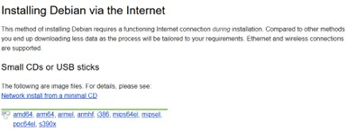
- Pour la SAE nous allons créer une nouvelle machine virtuelle sur nos machines :
- 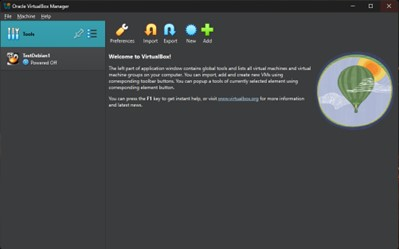
- Pour créer la nouvelle machine, nous allons dans Tools > New. Nous l’appelons SAE1.03, lui donnons l’image ISO que nous venons de télécharger, et précisons à la machine que nous voulons crée une machine sous Linux. Nous choisissons aussi un nom d’utilisateur et un mot de base, tous en laissant le nom de domaine préremplie par VirtualBox.
- 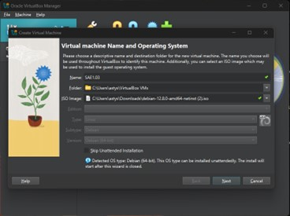
- 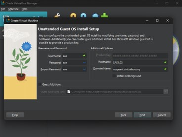
- Pour l’allocation de ressource sur la machine physique, nous gardons les réglages par défauts puis nous validons la création.
- 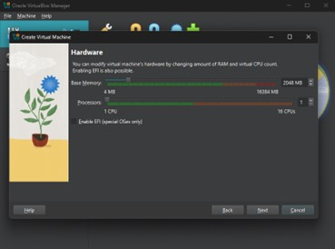
- 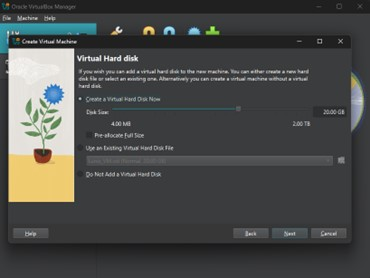
- Avant que la machine se lance, nous passons par les paramètres : Settings > Expert > Network et nous modifions la mise en réseau. La machine est paramétrée en premier lieu en NAT donc séparée du réseau domestique, et nous la passons en Bridged Adapter (Mode Pont) pour créer une nouvelle machine sur le réseau.
-

-
Création et utilisation d'une Machine Virtuelle
- La machine se lance, et comme j’ai déjà donner le fichier ISO à ma machine, le système d’exploitation s’installe.
- 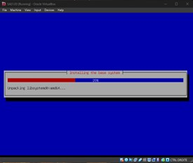
- L’installation est faite, je peux rentrer dans ma machine avec une interface visuelle.
- 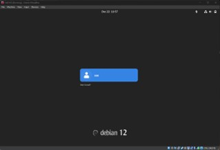
-
Configuration d’un serveur SSH
- Nous avons trouvé l’adresse IP de ma machine avec ip a, cette dernière est 192.168.1.
- 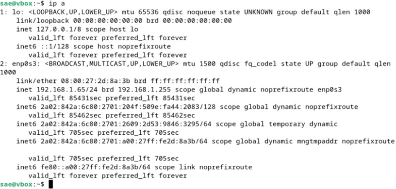
- Ensuite nous avons téléchargé avec apt openssh avec la commande
sudo apt install openssh-server.
Puis nous avons vérifié son statut avec sudo systemctl status ssh - Connexion au serveur via PowerShell avec la commande SSH.
- 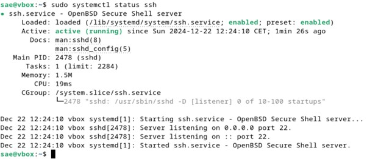
- Je me connecte avec l’adresse IP de ma machine à son serveur shh par l’intermédiaire de PowerShell avec la commande ssh sae@192.168.1.65.
- 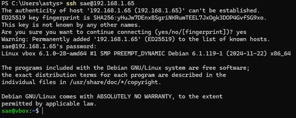
-
Création d’un compte administrateur admin_Gr107_BinomeG1
- Avec la commande su – puis usermod -aG sudo sae nous avons mis l’utilisateur sae dans le groupe super-utilisateur en tant que super utilisateur, comme le montre la commande groups sae qui affiche les groupes auxquels appartiens l’utilisateur sae. Puis nous sortons du mode root (sois super-utilisateur).
- 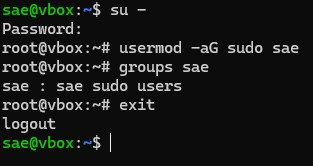
-
Avec la commande adduser, nous créons un nouvel utilisateur,
cependant nous
sommes obligées d’utiliser –force-badname pour que le nom
demander sois
accepter car il utilisait des caractères spéciaux et des majuscules [sudo adduser
--force-badname admin_Gr107_TrinomeG1].
Ensuite nous avons ensuite ajouté mon nouvel utilisateur au groupe des super utilisateurs [ sudo usermod -aG sudo admin_Gr107_TrinomeG1] comme on peut le voir dans l’affichage de groups admin_Gr107_TrinomeG1. - 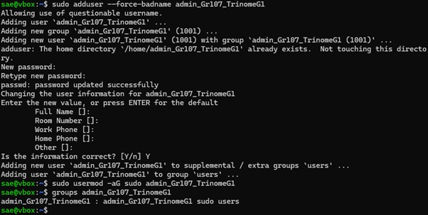
-
Création de trois utilisateurs TrinomeG1_1,TrinomeG1_2 et TrinomeG1_3
- Nous avons utilisé les mêmes commandes que précédemment pour créer trois utilisateurs
- 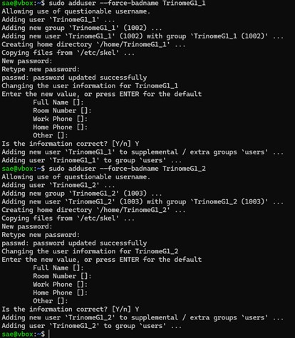
- 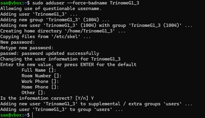
-
Création d'un groupe TrinomeG1
- Nous avons regardé les dernières lignes du document group contenant tous les groupes existants pour trouver un identifiant ligne [tail /etc/group]. Ici nous trouvons que l’identifiant 1005 est disponible. Nous créons un groupe TrinomeG1 [sudo groupadd -g 1005 TrinomeG1] et nous vérifions avec la même commande que précédemment que le groupe a bien été ajouter.
- 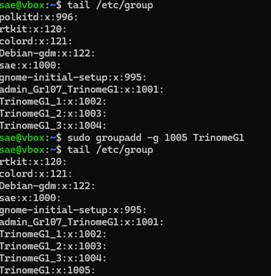
- Nous ajoutons au nouveau groupe TrinomeG1 les 3 utilisateurs avec la commande [sudo usermod -aG TrinomeG1 TrinomeG1_X] puis on vérifie l’ajout en affichant les groupes auquel ils appartiennent avec [groups TrinomeG1 TrinomeG1_X] X étant remplacé par 1, 2 ou 3.
- 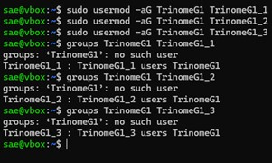
-
Personnalisation de l’invite de commande
- Nous souhaitons modifier l’invite de commande de sorte à avoir le nom d’utilisateur, suivi de deux points et du répertoire courant.
- En premier lieu nous avons sauvegarder dans une variable nommée defaut le contenu de la variable PS1 (ayant le prompt).
- Nous essayons ensuite différent paramètre pour le prompt, et décidons de garder un prompt avec : le nom d’utilisateur en vert gras, suivit de deux points et du répertoire courant en blanc.
- 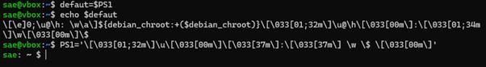
-
Pour mettre à jour définitivement le prompt pour l’utilisateur courant, il faut aller modifier le
fichier .bashrc
se trouvant dans le répertoire courant de l’utilisateur.
Nous l’ouvrons avec la commande nano en mode super utilisateur et on met en commentaire les autres définitions de PS1.
Nous ajoutons à la fin du document la ligne export :
PS1='\[\033[01;32m\]\u\[\033[00m\]\[\033[37m\]:\[\033[37m\] \w \$ \[\033[00m\]' permettant de rendre ma modification permanente. On effectue la commande source ~/.bashrc pour recharger la configuration et la rendre effective. - 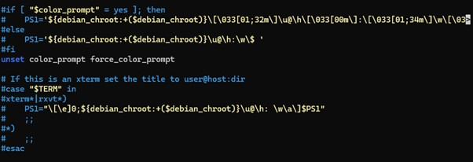
- 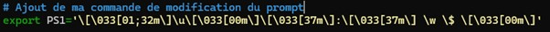
- J’éteins ma machine et la redémarre pour vérifier que ma modification a bien été prise en compte.
-
Installation et configuration dun service web (Apache, Ngnix, ...)
- Nous avons décidé d’utiliser le service Apache. Nous l’installons sur la machine avec la commande sudo apt install apache2.
- Nous avons vérifié sur la machine physique que l’installation c’est bien fait sur ma machine virtuelle en vérifiant que la page par défaut d'apache est bien présent à l’IP de ma machine virtuel.
- 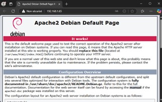
- Nous avons créé dans le répertoire courant un répertoire nommée SAE.1.03_site.fr avec la commande mkdir, et nous le mettons dedans un fichier index.html pour pouvoir tester son bon fonctionnement à la suite avec la commande.
- 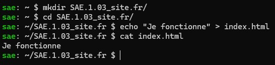
- Nous créons un lien symbolique dans le répertoire srv vers le répertoire que nous venons de crée et vérifions qu’il fonctionne.
- 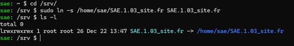
- Puis nous nous tournons vers le fichier apach2.conf se trouvant dans ect > apache2, et enlevons les commentaires pour laisser l’accès a apache au ré3pertoire srv dans lequel nous avons mis un lien symbolique vers notre répertoire. De plus je supprime Indexes des options pour ne pas permettre à l’utilisateur du site de voir l’arborescence.
-

- Puis nous avons modifié le fichier 000-default.conf se trouvant dans ect > apache2 > sites-availables pour y mettre l’accès direct vers le répertoire srv de ma machine.
- 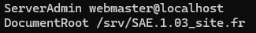
- Pour avoir accès au site par le lien symbolique, il faut donnée les droits d’accès en exécution aux autres utilisateurs avec la commande chmod o+x sae.
- 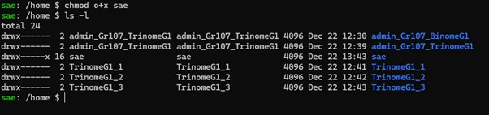
- Nous effectuons un sudo systemctl reload apache2.service pour mettre à jour et nous confirmons que le site marche bien après toutes les manipulations effectuées.
- 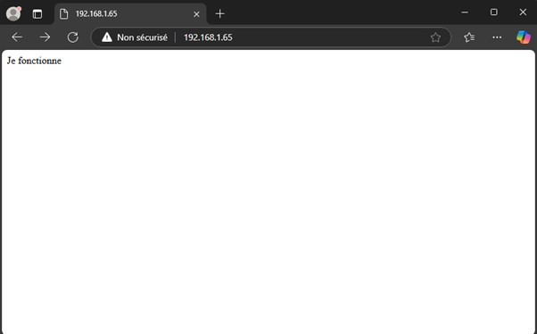
-
Configuration de Web Storm pour le déploiement
- Au sein de WebStorm, nous nous sommes rendus dans Tools > Deployment > Configuration > Add > SFTP pour créer un lien entre mon site en ligne par ma machine et les pages que nous voulons mettre en ligne.
-

- Ensuite nous avons configurer le SSH avec l’adresse IP de ma machine tous en vérifiant que le tout marche.
- 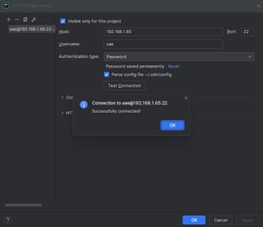
- Puis nous avons fait le lien vers le bon répertoire dans ma machine.
- 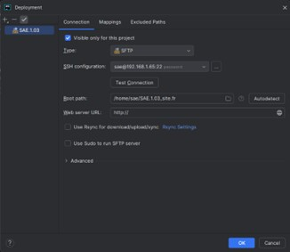
- Voici en ligne la dernière version de la page des questions à traitées du compte rendu au format web en ligne.
- 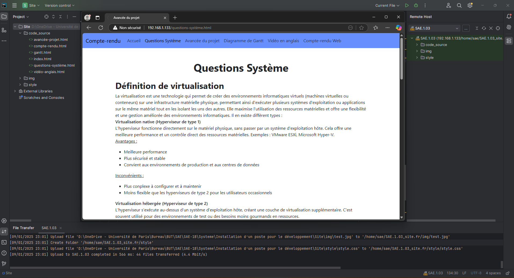